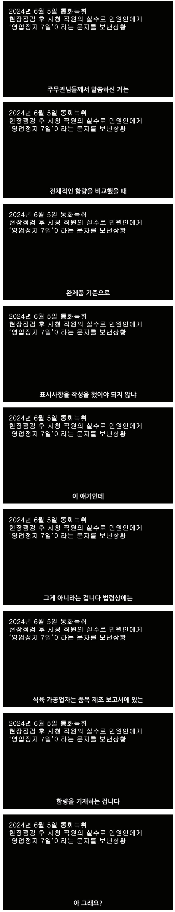

근데 문자를 주자마자 성호신이 아 잘됐다. 은현장 이새끼 뒤졌다 하면서 라이브를 켜가지고
그때부터 내가 헤어나올수 없는 다리를 건너게 된거지
우리나라 법은요 돈까스를 튀기기전 고기 무게를 재야 하는거에요
스발 돈까스를 다 튀겨가지고 그거를 튀김옷이랑 고기를 분해해가지고 무게를 재는게 사람새끼입니까?
표기 (튀기기전 재료의 무게를 잼)
총중량 : 120g
고기 중량 : 90g
비율 : 75%
구청 측정 (튀긴 상태의 돈까스를 분해해서 잼)
총중량 : 170g
고기 중량 : 100g
비율 : 58%
구청 직원이 공장가서 검사해보니 고기중량은 높았지만 비율이 줄어들어서
표기법위반이다하며 욕을 많이 먹었는데
성호신이 민원을 계속 넣어 구청직원이 검사한게
돈까스를 튀기기전 사용한 고기함량과 밀가루 튀김의 양을 잰게 아니라
이미 다 튀겨서 제품으로 된 냉동돈까스를 포장지를 뜯어
고기와 튀김 나눠서 무게를 쟀다고 함
재료 상태에서의 무게를 잰게 아니라
튀긴뒤 조리가 되어 포장이 된 상태에서 그걸 뜯어 고기와 튀김옷으로 분해해 무게를 쟀고
그러다보니 고기비율이 줄어들게 됨
돈까스를 튀기면 고기는 수분 증발이 되서 무게가 줄어들게 됨
반면 튀김옷은 기름을 흡수하여 무게가 늘어남
즉 고기는 무게가 줄어들고 튀김은 무게가 늘어나므로 고기 비율 자체가 줄어들수 밖에 없음
그럼에도 불구하고 수분 증발이 된 고기가 100g으로 원래 표기된 90g보다 많은건
처음부터 진짜 고기를 110g 이상 넣었다는것임

실제로 장사의신은 해당 공무원에게 완제품으로 함량 측정하는게 아니라
품목 제조 보고서에 있는 함량을 기재하는게 법적으로 맞다고 따짐
그러자 나온 대답 아 그래요?
3줄요약
1. 돈까스 성분 함량 기재는 제조전 각 재료별로 잰 무게를 기재하는건데
2. 성호신들의 독촉으로 공장와서 검사한 공무원들은 튀긴상태의 완제품을 뜯어서 재료를 나눠 무게를 잼
즉 고기는 수분날아가서 무게는 줄어들고 튀김옷은 기름을 흡수해서 무게가 늘어나 고기 함량 비율이 줄어든 상태가됨
3. 이에 장사의신측이 전화로 항의하니 아 그래요?
맞는 말이네
근데 아마 댓글 다 못 봐서 그런 거 아닐까?
딱 어그로 끌리기 좋은 첫마디였어서